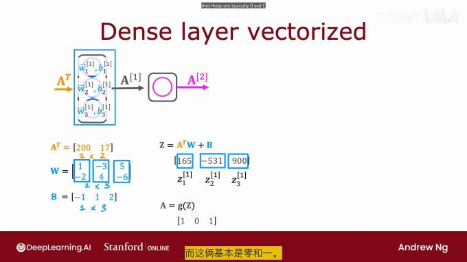
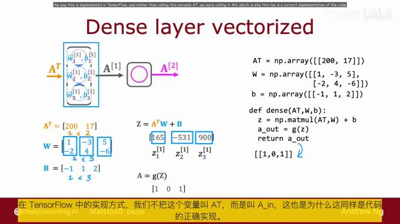

话不多说，我们直接进入神经网络的向量化实现。00:01
我们来看看你在之前视频中见过的代码，希望矩阵乘法，也就是那个矩阵乘法计算，能让你更明白。00:07
你之前看到了如何取矩阵 A 并计算 A 的转置乘以 W，得到这个矩阵 Z。00:19

如果这是矩阵 A，这是一个 NumPy 数组，其元素对应我上面写的内容，那么 A 的转置，我将写成 AT，将是这个矩阵，同样，A 的列现在被放到了行上。00:31
顺便说一下，除了这样设置 AT，在 NumPy 中计算 AT 的另一种方法是写 AT 等于 A 点 T。00:52
那是转置函数，它将矩阵的列取出来并放到一边。01:04
在代码中，你会这样初始化矩阵 W。01:09
这是另一个二维 NumPy 数组。01:14
然后，要计算 Z 等于 A 的转置乘以 W，你会写 Z 等于点 matmul，传入 AT，W。01:18
这将计算出这里的矩阵 Z，得到下面这个结果。01:30
顺便一说，如果你读别人的代码，有时会看到 Z 等于 AT 然后符号 W。01:38
这是调用 matmul 函数的另一种方式，尽管我觉得使用 np 点 matmul 更清晰。01:46
所以你在这门课看到的代码中，我们就用这样的 matmul 函数，而不是这个符号。01:55
那么，我们来看看前向传播的向量化实现是什么样子的。02:03

我将设置 A 的转置等于输入特征值二一七。02:08
这就是常规的输入特征值，二百度烘烤咖啡十七分钟。02:16
所以这是一个一乘二的矩阵。02:22
我将取参数 W 一、W 二和 w 三，像这样将它们按列堆叠，形成这个矩阵大写 W。02:26
而值 b、b、b，我将放入一个一乘三的矩阵，也就是这个矩阵 B，如下所示。02:38
那么结果是，如果你计算 Z 等于 A 转置乘 W 加 B，会得到这三个数字。02:47
这是通过取输入特征值并乘以第一列，然后加上 b，得到一六五。02:59
取这些特征值，与第二列，也就是权重 w 二做点积，再加上 b 二，得到负五三一。03:11
这些特征值与权重 w 三点积，再加上 b 三，得到九百。03:21
如果你想仔细核对这些计算，可以暂停视频，但这会给出 z 一一、z 一二和 z 一三的值。03:28
最后，如果函数 g 将 sigmoid 函数逐个元素应用于这三个数，也就是说，将 sigmoid 函数应用于一六五、负五三一和九百。03:41
那么你最终得到 a 等于 g 作用于这个矩阵 z，结果是一零一。03:55
它是一、零、一，因为 sigmoid 函数作用于一六五的结果非常接近一，你知道，不考虑数值舍入误差，它基本就是一。04:02

我们来看看如何在代码中实现。04:20
A 的转置等于这个，就是这个一乘二的数组二一七。04:23
矩阵 W 是这个二乘三矩阵。04:29
所以，你可以这样在层中实现前向传播：dense 输入 A 转置，W B 等于 Z 等于 matmul A 转置乘 W。04:37
然后 A_，也就是这个层的输出，等于 g，即逐个元素应用于这个矩阵 Z 的激活函数。04:54
然后你返回 A_，这就给出了这个值。05:07
如果你把这张幻灯片和几个视频前的幻灯片比较，会发现只有一点小区别，根据惯例，在 TensorFlow 中的实现方式，我们不把这个变量叫 AT，而是叫 A_in，这也是为什么这同样是代码的正确实现。05:13

TensorFlow 中还有一个惯例，即单个样本实际上是在矩阵 x 中按行排列的，而不是在矩阵 x 的转置中，这就是为什么在 TensorFlow 中代码实现看起来像这样。05:34
但这解释了为什么只用几行代码，你就能在神经网络中实现前向传播。05:50
而且，还能获得巨大的好处，因为现代计算机非常擅长高效地实现矩阵乘法，比如 matmul。05:57
这是本周的最后一个视频。06:08
感谢你一直坚持看完这些可选视频的最后。06:11
本周剩下的时间，我希望你也去看看，看看测验和实践实验，以及可选的实验，以便更深入地练习这些材料。06:16
你现在知道了如何在神经网络中进行推理和前向传播，我觉得这真的很酷。06:28
在你完成测验和实验之后，请一定再回来，下周我们将学习如何真正地训练神经网络。06:37
那么，期待下周见到你。06:46